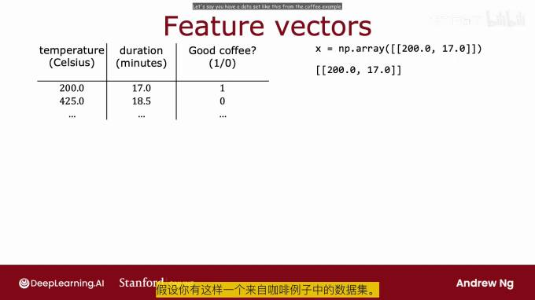
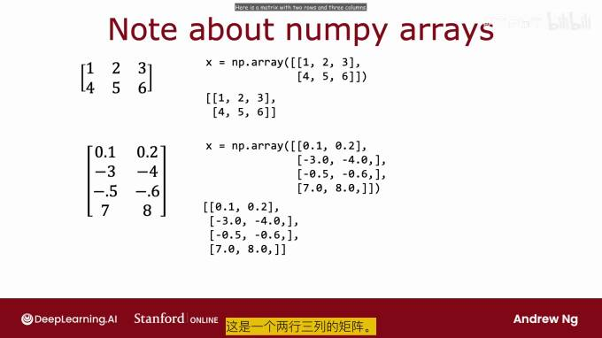
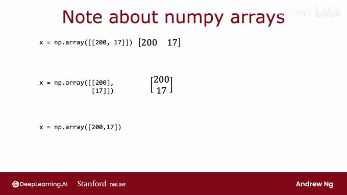
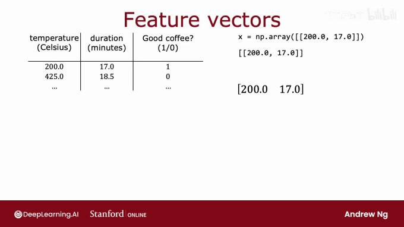
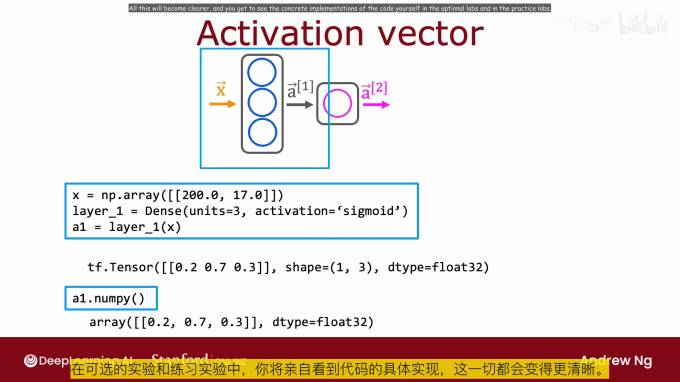
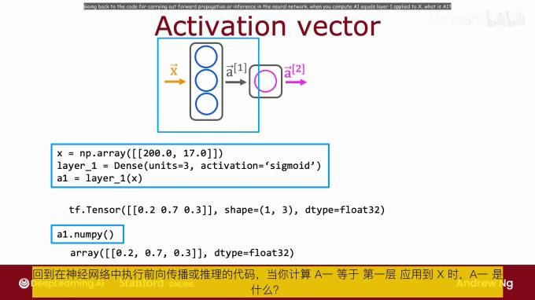
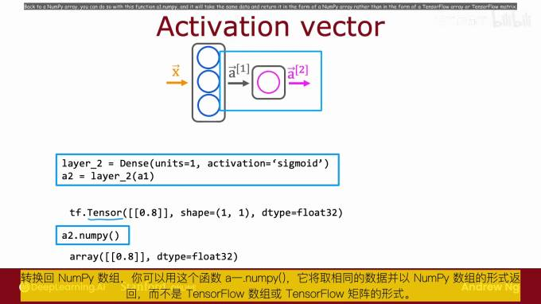
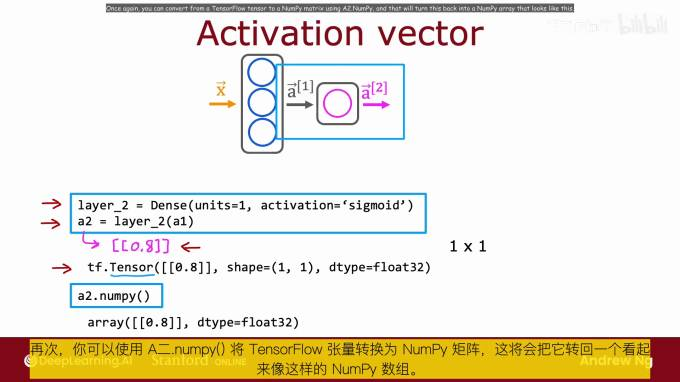

00:03在这个视频中，我想和你逐步梳理一下数据在 NumPy 和 TensorFlow 中是如何表示的，以便你在实现新的神经网络时，能有一个一致的框架来思考如何表示你的数据。
00:18关于当今代码中处理事情的方式，有一件不太走运的事情是，很多很多年前，NumPy 率先被创建出来，并成为了 Python 中线性代数的标准库。
00:31然后过了很久，Google Brain 团队，也就是我创立并一度领导的那个团队，创建了 TensorFlow。
00:40所以不幸的是，NumPy 和 TensorFlow 表示数据的方式存在一些不一致之处。
00:48因此，了解这些约定是有好处的，这样你就能实现正确的代码，并有望让你的神经网络顺利运行起来。
00:57我们先来看一看 TensorFlow 是如何表示数据的。
01:02假设你有这样一个来自咖啡例子中的数据集。

01:07我提到过，你会像这样写 X。
01:11那么，你这里为什么要有双层方括号呢？
01:16我们来看看 NumPy 是如何存储向量和矩阵的。
01:22如果你觉得矩阵和向量是复杂的数学概念，不用担心。
01:29我们会通过几个具体的例子，而你将能够完成实现神经网络所需的一切矩阵和向量操作。
01:39我们先从一个矩阵的例子开始。
01:42这是一两行三列的矩阵。

01:48注意，这里有一、二两行，和一、二、三列。
01:57所以我们叫它二乘三矩阵。
02:02按照惯例，矩阵的维度记作行数乘以列数。
02:13要存储这个矩阵，这个二乘三的矩阵，你只需写出 x 等于 np.array，里面放上像这样的数字，你会注意到，方括号告诉你，一、二、三是这个矩阵的第一行，四、五、六是这个矩阵的第二行。
02:33四、五、六是这个矩阵的第二行。
02:39然后，最外层的方括号将第一行和第二行组合在一起。
02:46这样就将 x 设为了这个二维数字数组。
02:51所以，矩阵就是一个二维数字数组。
02:56找门再术省例了。
02:59这里，我写出了另一个矩阵。
03:02它有多少行、多少列呢？
03:10四行，它有一、二两列。
03:16所以这是一个行数乘以列数的矩阵。
03:20因此，它是一个四乘二的矩阵。
03:23要把它存到代码里，你会写等于 np.array，然后用这里的语法将这四行矩阵存到变量 x 中。
03:36这就创建了一个包含这八个数字的二维数组。
03:40矩阵可以有不同的维度。
03:44你看到了个二乘三矩阵和一个四乘二矩阵的例子。
03:49矩阵也可以是其他维度，比如一乘二或二乘一。
03:56我们会在下一张幻灯片看到这些例子。

04:00那我们之前把 x 设为输入特征向量时，做的是将 x 设为 np.array，里面用双层方括号包着“二百。
04:13这样做的效果是创建了一个一乘二的矩阵，也就是只有一行两列。
04:23我们来看另一个例子。
04:26如果你将 x 定义为 np.array，但像这样写，这会创建一个二乘一的矩阵，有两行一列。
04:41因为第一行只是数字二百，第二行只是数字十七。
04:50所以，这有同样的数字，但是在一个二乘一，而不是一乘二的矩阵里。
04:56在数学中，上面这个例子也被称作行向量，因为它是一个只有一行的向量。
05:03而这个例子也被称作列向量，因为它是一个只有一列的向量。
05:11使用像这样的双层方括号和像这样的单层方括号之间的区别在于，虽然上面两个例子是二维数组，且其中一个维度恰好为一，N。
05:28但这个例子产生的是一个一维向量。
05:33所以这只是一个一维数组，它没有行或列的概念。
05:39尽管按照约定，我们可能会像这样把 x 写成纵向的。
05:45我想把这个和我们之前在课程一中做过的对比一下，那时我们写 x 用的是单层方括号，就像这样。
05:55那样会在 Python 中产生一个被称作一维向量的东西，而不是一个二维矩阵。
06:03严格来说，它不是一乘二或二乘一。
06:06它只是一个线性的数组，没有行，没有列。
06:14所以，在课程一中，当我们处理线性回归和逻辑回归时，我们使用这些一维向量来表示输入特征 x。
06:24而在 TensorFlow 中，约定是使用矩阵来表示数据。
06:30为什么会有这种约定上的转变呢？
06:33嗯，事实证明，TensorFlow 是为了处理超大数据集而设计的，通过用矩阵而不是一维数组来表示数据，能让 TensorFlow 内部的运算效率更高一些。

06:49那么，回到我们最初的例子，对于这个数据集中特征为“二百摄氏度、十七分钟的第一个训练样本，我们会像这样表示它。
07:00所以，这实际上是一个一乘二的矩阵，正好有一行两列来存储数字二百和十七。
07:12如果这些看起来像是很多细节和非常复杂的约定，不用担心。
07:18在可选的实验和练习实验中，你将亲自看到代码的具体实现，这一切都会变得更清晰。

07:27回到在神经网络中执行前向传播或推理的代码，当你计算 A 一等于第一层应用到 x 时，A 一是。

07:41嗯，A 一实际上将会是，因为这里有三个数字，实际上会是一个一乘三的矩阵。
07:52如果你打印输出 A 一，你会得到类似这样的东西。
07:57它是 tf.，零点二、零点七、零点三，形状是一乘三。
08:07这是一一乘三的矩阵。
08:09这是 TensorFlow 表示这是一个浮点数的方式，意味着它是一个带小数点的数字，在你的计算机中用三十二位内存来表示。
08:23这就是 32 的含义。
08:28这里的张量是 TensorFlow 团队创建的一种数据类型，目的是为了高效地存储矩阵并在其上进行计算。
08:38所以，在这个幻灯片中，每当你看到张量，就把它想成矩阵就可以了。
08:44严格来说，张量比矩阵更泛化一些，但就本课程的目的而言，把张量仅仅看作是表示矩阵的一种方式即可。
08:55记住，我在这个视频开头说过，有 TensorFlow 表示矩阵的方式，也有 NumPy 表示矩阵的方式。
09:04这是 NumPy 和 TensorFlow 创建历史造成的一个产物。
09:10不幸的是，这两种表示矩阵的方式已经深深嵌入了这些系统。事实上，如果你想将 A 一，这个张量。
09:25转换回 NumPy 数组，你可以用这个函数 a 一.numpy()，它将取相同的数据并以 NumPy 数组的形式返回，而不是 TensorFlow 数组或 TensorFlow 矩阵的形式。

09:41现在，我们来看看第二层输出的激活值会是什么样子。
09:48第二层是一个具有一个单元和 sigmoid 激活函数的 Dense 层，A 二是通过将第二层应用到 A 一上来计算的。
10:02A 二可能是一个像零点八的数字，严格来说，这是一个一乘一的矩阵。
10:10它是一个具有一行一列的二维数组。
10:14所以它就等于这个数字零点八。
10:20如果你打印输出 A 二，你会看到它是一个 TensorFlow 张量，只有一个元素，一个数字，零点八，它是一个一乘一的矩阵。
10:32再次说明，它是一个32的浮点数，占用三十二位计算机内存。
10:40再次，你可以使用 A 二.numpy()将 TensorFlow 张量转换为 NumPy 矩阵，这将会把它转回一个看起来像这样的 NumPy 数组。

10:54所以，这希望能让你了解数据在 TensorFlow 和 NumPy 中是如何表示的。
11:00我习惯在 NumPy 中加载和操作数据，但当你把 NumPy 数组传给 TensorFlow 时，TensorFlow 喜欢把它转换成自己的内部格式，也就是张量，然后利用张量进行高效运算。
11:19而当你读回数据时，你可以让它保持为张量，或者把它转回 NumPy 数组。
11:27我觉得有点可惜的是，这些库的演化历史导致我们不得不做这种额外的转换工作，而实际上这两个库可以协作得很好。
11:39但当你来回转换时，不论你用的是 NumPy 数组还是张量，这都是你在编写代码时需要注意的一件事。
11:48接下来，让我们把所学内容整合起来，真正地去构建一个神经网络。